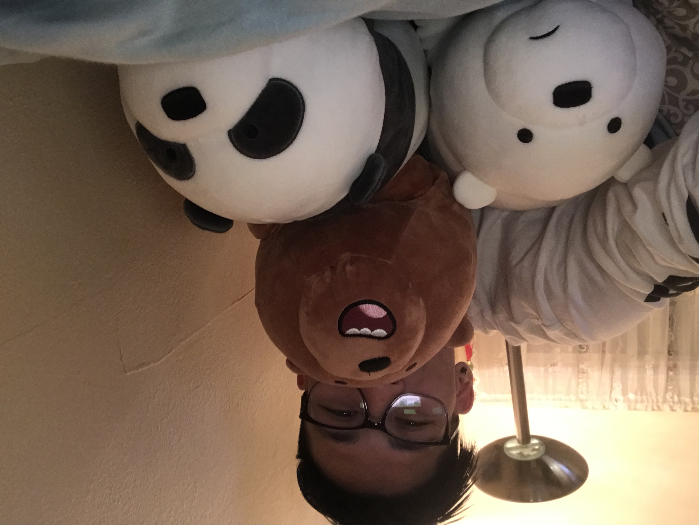

 Hello! My name is Takyu Chan. I was born and raised in San Francisco in a very traditional Asian family. I'm currently in my third year of college here at UCR. Besides this program, I'm in school, working with kids at the Boys and Girls Club, and in a fraternity. Yes I know, that's a lot of this to do but I like to challenge myself. I do not have any particular hobbies but I enjoy playing a lot of video games or interacting with people in a social setting. I'm pretty extroverted and enjoy talking to people regardless of their age.
Going to college I would have never expected me to do cs, much less a bootcamp for it. I was always a science type of guy but I came to realize that I can't memorize the terms needed for bio or chem. I then switched to business which didn't end well since all the classes were in the morning and I have trouble waking up early. My advisor then suggested that I do applied math as my major (it's essencially math and cs combine into one major) which is where I'm at today. I excel at logical problems which makes this course really fun. Only down side is, I feel super out of place since everyone else is a lot older than me.
Copyright ©